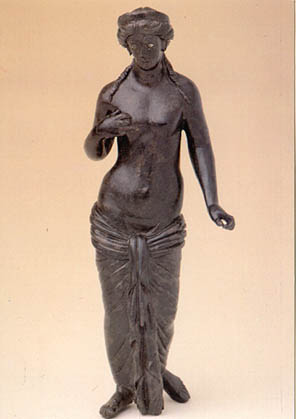

|
 |
La ciudad romana se asentaba en lo
que hoy se conoce como el cerro del Piquillo, cercano a la confluencia de dos ríos, el Tirón y el Reláchigo. En
el cerro del Piquillo
pueden contemplarse , una necrópolis,
numerosos restos de ánforas, cerámicas, ruedas de molino, tejas, etc., y los restos de la calzada romana.
Libia tenia ceca. Durante las
Guerras Civiles fue fiel a Pompeyo.
De época romana se han hallado
los restos de lo que fue la calzada romana que unía Zaragoza (Caesaraugusta)
con Briviesca (Virobesca), y discurria por Alfaro (Graccurris),
Calahorra (Calagurris), Logroño, Varea, Lardero, Entrena, Tricio,
Hormilla, Valpierre, San Torcuato, Villalobar, Leiva, Tormantos, Cerezo
(Segisamunculum),...Por este camino siglos más tarde,
transitarían los peregrinos que iban a Santiago.
La Venus de Herramélluri (s. II ) se puede contemplar en el Museo de La Rioja, en Logroño.
Menos conocido es el
Candelabro Sideral de Herramélluri, un molde de piedra de 10 cm. de
alto y 12 mm. de grueso, con inscripciones. Entre los restos que se pueden
encontrar en el pueblo destacan la piedra
sepulcral que adorna una pared de una casa de Herramélluri en la calle Santo
Domingo.
|